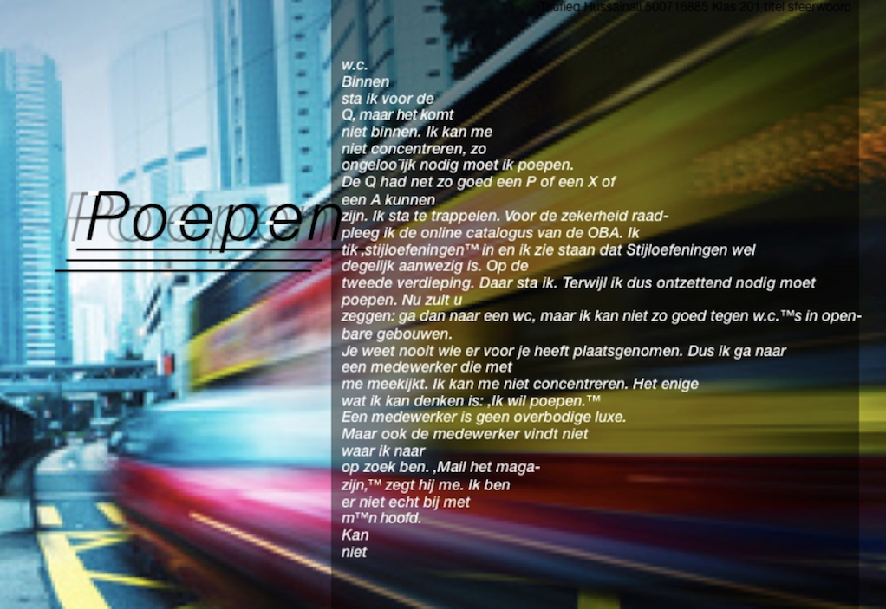
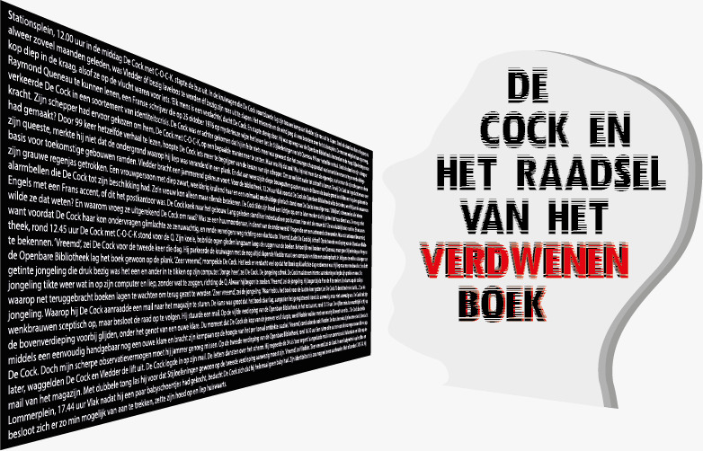
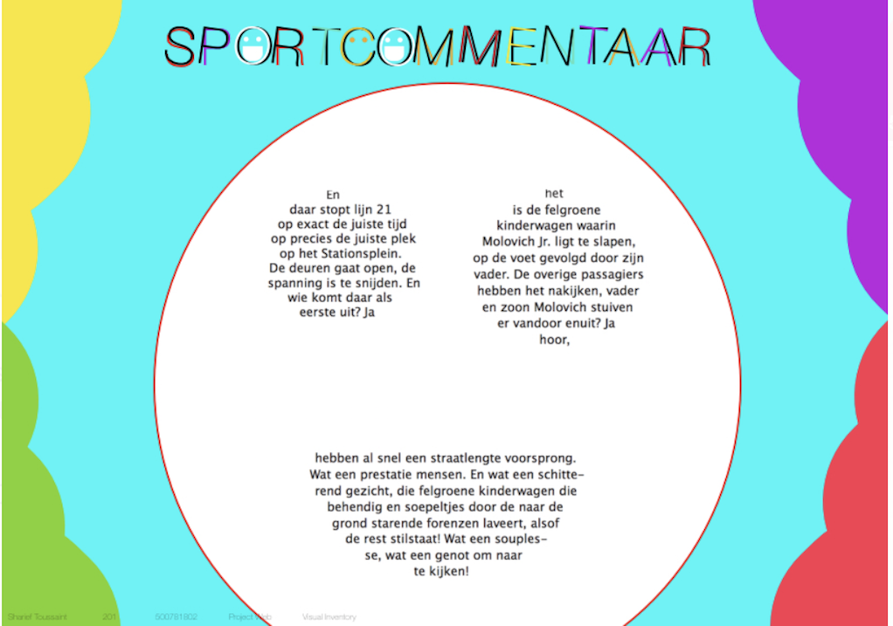
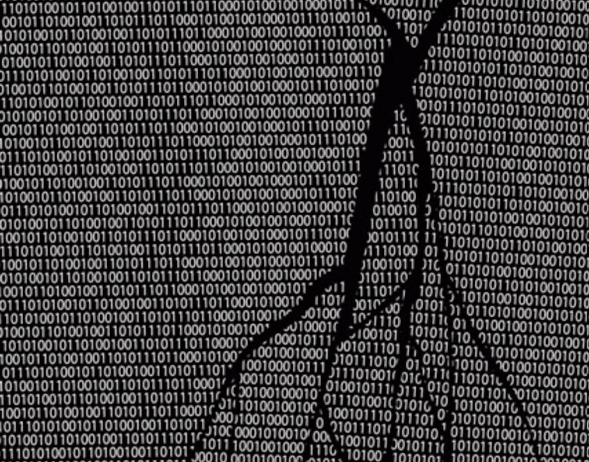
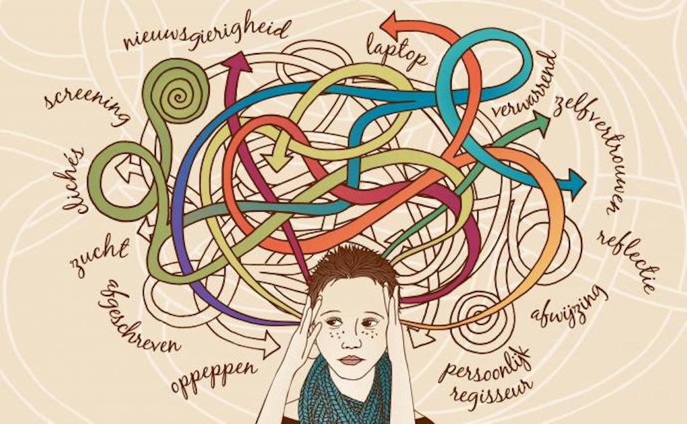

Zodra ik de bus uitstap steek ik een dikke vette joint op. De derde van de dag al. Ik neem een lange haal, inhaleer diep, houd de rook een tijdje binnen en blaas dan, de lippen gerond, het hoofd een beetje in de nek, een enorme stoomkegel de atmosfeer in. Het miezert een beetje en […]
Nummer 3
Poepen

Het welhaast slaapwekkende geschud van de bus heeft er voor gezorgd dat ik, tegen de tijd dat ik moet uitstappen (ter hoogte van Centraal Station Amsterdam) ontzettend nodig moet poepen. Ik ren achter de kinderwagen aan richting de Openbare Bibliotheek, waar ik toch moet zijn, omdat ik Stijloefeningen van Raymond Queneau wilde lezen. Er kwam […]
Nummer 4
De Cock en het raadsel van het verdwenen boek

Stationsplein, 12.00 uur in de middag De Cock met C-O-C-K. stapte de bus uit. In de kruiwagen die De Cock voortduwde lag zijn trouwe kompaan Vledder zijn roes uit te slapen. Sinds de dood van hun schepper, nu alweer zoveel maanden geleden, was Vledder óf bezig laveloos te worden óf bezig zijn roes uit te […]
Nummer 5
Verliefd
Licht van mijn leven. Ik stapte vandaag bus 21 uit. Het was op het midden van de dag. En wat een heerlijke dag! Het was twaalf uur, onze fantastische zoon sliep net. De miezelregen aaide de haartjes op mijn hand en ik dacht aan jou. De mensen dansten en huppelden van en naar het station, […]
Nummer 6
Sportcommentaar

En daar stopt lijn 21 op exact de juiste tijd op precies de juiste plek op het Stationsplein. De deuren gaat open, de spanning is te snijden. En wie komt daar als eerste uit? Ja hoor, het is de felgroene kinderwagen waarin Molovich Jr. ligt te slapen, op de voet gevolgd door zijn vader. De […]
Nummer 7
Beroemd
Vlak voordat ik de bus uitstap bedank ik de buschauffeur via de spiegel voor zijn diensten. Hij zwaait joviaal terug. ‘Mijn vrouw is een groot fan van u’, roept hij. ‘Doe haar de groeten’, zeg ik en stap uit. Centraal Station. Ik duw mijn zoon voort. Hij slaapt. Zich onbewust van de last die er […]
Nummer 8
Code

Kraak de code en win een romantisch etentje met de verwarde man. In kwellende situaties toveren apen pennenvruchten uit invloedrijke tapijthandelaren. De engelen buigen uitermate succesvol en negeren langzaam onze overrijpe politieke overlevingstrategieën. Verveelde en radicaal hompiekurkende ettertjes tegelen slablaadjes tot appelmoes. Tevens, in overleg, nagelen schoolverlaters patatjes. Leipe eekhoorntjes in Napels, met immorele jaknikkers […]
Nummer 9
Doof
De bus stopt. Mensen stappen uit. Heel voorzichtig kijk ik in de kinderwagen. Mijn zoon slaapt eindelijk. Ik had het kunnen weten, want halverwege de busreis merkte ik dat de mensen zich niet meer aan ons stoorden. Het gejank zou toen wel gestopt zijn. Ik stap uit en wandel over het stationsplein richting de Openbare […]
Nummer 10
De verwarde man

De politie heeft dinsdag 2 februari een verwarde man aangehouden. Hij was op dat moment in een babywinkel op het Bos en Lommerplein bezig babyschoentjes te kopen. Een luttele drie uur daarvoor stapte de verwarde man op het stationsplein uit de bus. Hij duwde een kinderwagen voort waarin 99 blikjes Whiskas lagen. Hij liep het […]